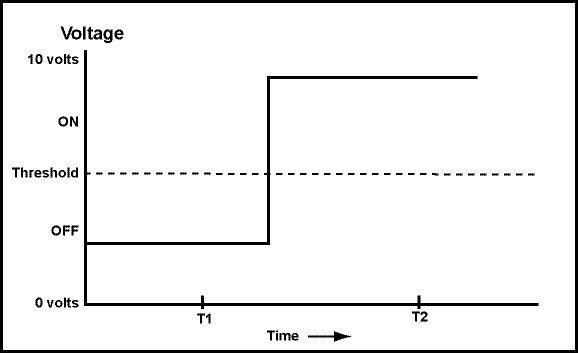

ON
The analog signal (continuously changing voltage signal) moves up and down, but at time "T2" it is clear that it is above the threshold. Exact measurement is not needed.
Analog signals continuously change in value. By using a threshold, analog signals can represent binary data ("on/off" data). It is easy and fast (for electronics, as well as for humans) to determine if a voltage is above or below a threshold. The figure shows a signal that transmits "off" then "on". (The signal is examined at times T1 and T2.)
Is is clear that the signal is "off" at time T1 and "on" at time T2?